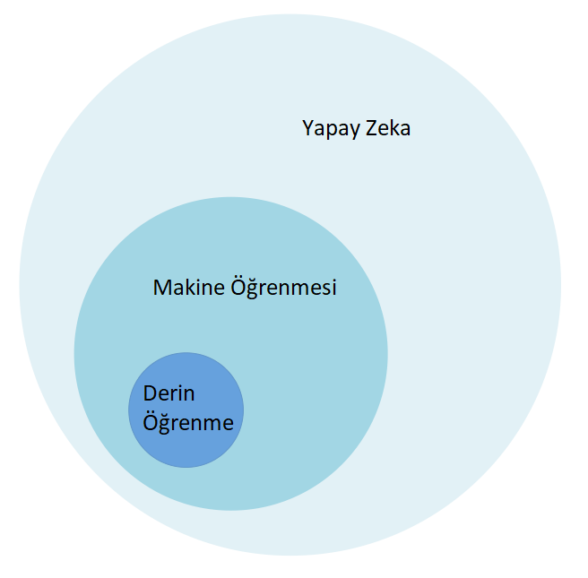

Yapay Zeka Nedir? Yapay Zeka, Makine Öğrenmesi ve Derin Öğrenme Arasındaki Farklar Nelerdir?
Yapay zeka kavramı temel olarak insan zekası kullanılarak yapılabilecek işleri bilgisayara ya da makinelere yaptırmak şeklinde tanımlanmaktadır. Alan Turing ve Claude Shannon uzun sohbetler sonucu, “basit ve ikilik talimatlarla çalışan bir makinenin sadece matematik problemleriyle değil, mantıkla da başa çıkabileceğini fark ederek, eğer mantık insan beyninin işleyişinin temeliyse bir makine insan zekasını teoride taklit edebilir” kanısına varmışlardır.
1943 yılında McCoulloch ve Pitts tarafından nöron aktivitelerini tanımlamak için önerilen matematiksel model ile yapay zekanın temellerinin atıldığı düşünülmektedir. 1956 yılında John McCourthy tarafından düzenlenen iki aylık çalıştayın sonunda “Yapay Zeka” terimi ilk defa kullanılmış ve “Yapay zeka, insan zekasının özelliği olan görevleri gerçekleştirebilen makineleri içerir” ifadesi kullanılmıştır.
Yapay zeka kavramına hemen hemen hepimiz çeşitli filmlerden (Matrix, Terminatör vb.) oldukça aşinayız. Fakat son zamanlarda yapay zeka teriminin yanı sıra makine öğrenmesi ve derin öğrenme terimleri de oldukça popüler hale geldi ve yapay zeka teriminin yerine kullanılmaya başladı.

Peki yapay zeka, makine öğrenmesi ve derin öğrenme arasındaki farklar nedir ?
Bu üç terim arasındaki ilişkiyi en basit şekliyle aşağıdaki şekil yardımı ile açıklayabiliriz. Yapay zeka, insanların çözebildiği problemleri makinelere çözdürme işlemiyken; makine öğrenmesi (1980 li yıllarda ortaya çıkmış) yapay zeka projelerini gerçekleştirmenin kolay yoludur. Hayatımıza 2010 yılında giren derin öğrenme isemakine öğrenmesinin bir çok yaklaşım / yönteminden (Bayesian ağlar, gruplama, mantıksal programlama, karar ağaçları, takviyeli öğrenme vb.) sadece bir tanesidir.
Makine öğrenmesi olmadan yapay zeka ile bir çok kural dizisi oluşturarak ve uzun kod dizileri yazarak makineye insan davranışlarını taklit ettirebilirsiniz. Makine öğrenmesinde ise belirli bir görevi yerine getirmek için özel talimalatlara sahip kodlama rutinleri yerine, algoritmayı eğitmeniz gerekir. “Eğitim” ile kastedilen algoritmayı büyük miktarda veri ile besleyerek algoritmanın parametlerinin ayarlaması ve kendisini geliştirilmesine izin verilmesidir.
Derin öğrenme çok katmanlı yapay sinir ağlarıdır ve insan beyninden esinlenerek oluşturulmuştur. Derin öğrenmede, gelişen teknoloji ve işlem gücücün artması ile diğer makine öğrenme yöntemlerine nazaran daha fazla veri kullanılarak katman sayısı, nöron ağırlıkları ve algoritmanın tüm parametreleri en iyi sınıflandırıcı sonucunu verecek şekilde otomatik olarak öğrenilir.
Özetle, derin öğrenme makine öğrenmesinin bir alt kolu iken, makine öğrenmesi de yapay zekanın alt bir koludur. Uygulama alanlarının çeşitliliği de yukarıdaki şemada kapladıkları alanlar ile orantılıdır.